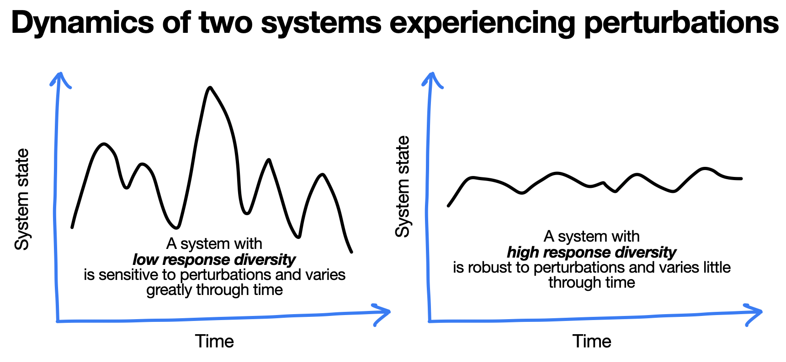

About
Environments are always changing, and the response of a system experiencing such perturbations can have important consequences. A system might remain relatively unaffected by perturbations, or a system might change. For example, a food production system might be resilient to a drought, such that yield is relatively unaffected. Or it might lack resilience, so that drought causes a great reduction in yield.
One important feature of the system that determines its resilience, is the variation in how its individual components respond to perturbations. This variation in responses is known as ‘response diversity’. It is implicated in the resilience of many kinds of systems to perturbations, including food production systems, financial systems, ecosystems, health systems, communications systems, to name but a few (e.g. Walker et al 2023).

However, the ways in which response diversity is studied and measured are diverse and span across multiple systems, scales and environments. Because of this, our understanding of whether there are general “rules” and “metrics” with respect to response diversity is still limited. Furthermore, there is considerable untapped potential for assessment and monitoring of response diversity, and for response diversity to be included in decisions that impact on the future of the numerous systems mentioned above.
Aims
The aims of the Response Diversity Network currently include:
To organise and accelerate scientific advances about response diversity.
To promote the inclusion of response diversity in monitoring and assessment of biodiversity and ecosytem change.
To provide clear and accessible information about response diversity to relevant individuals and organisations.
The network should evolve, and as it does, these aims and how they are approached can evolve as well. The process for such change should be as open and inclusive as possible.